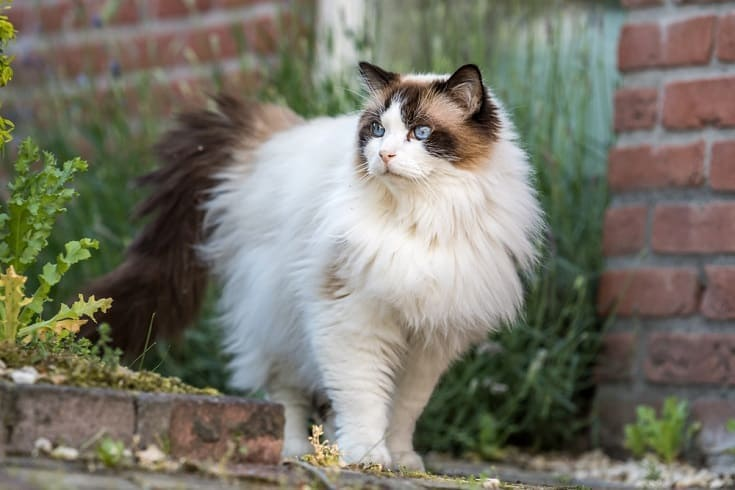
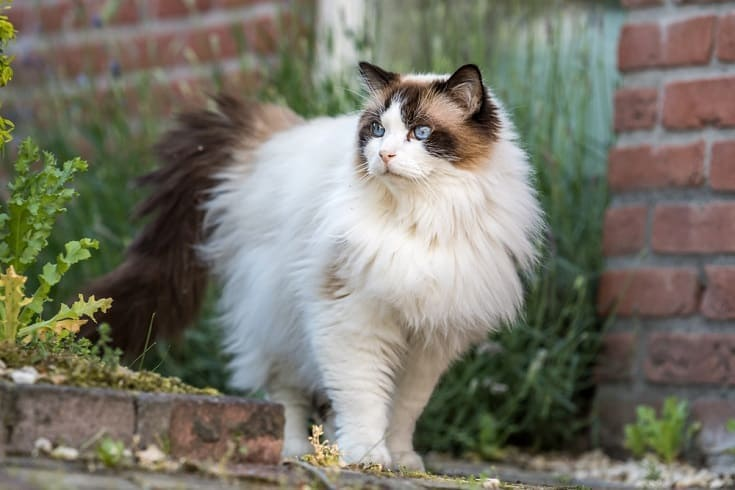

- Belly rubs
- Playing tug-of-war
- Sneaking onto the couch
(1)Bacon Q Dog

Bacon Q. Dog is a 9yr old labradoodle. He prefers to spend his days lounging among the three different beds/couches that his family has gifted him. He enjoys a walk or two around the neighborhood, as long as he can pretend that he doesn't see any of the other animals to avoid the embarrassment of not wanting to admit he has no wolf-like skills in chasing them.
At night just as the rest of the family is ready to relax, Bacon suddenly wants to release all of his energy. He will place his toys on a mini couch and frantically drag the couch around, giving his toys "a ride." There is also a lot of rolling. Lots and lots of rolling.
Photo Gallery


Likes
- She loves individual corn kernels served on human hands
- She enjoys sitting royally on suitcases to claim ownership of her humans
- She prefers to be alone and sit on soft surfaces in her free time
(2)Milktea

Milktea is a Scottish fold with a personality of a princess. She loves her veggies and refuses to eat anything dropped on the ground. She makes it clear when she has a demand of any sort by complaining in a loud, distinguished manner. If what she says could be translated, it probably would be, “This is atrocious, the water container has been empty for the 3rd time this week. I want to see the manager.”.
Despite her cuteness and royalty, she actually suffers from a genetic disorder intentionally brought upon by humans. I highly advise against keeping a Scottish fold because they are in constant pain when they reach around 2 years old. Cartilage accumulates around her paw joints and tail joints and it becomes painful for them to even walk. She is living evidence of human’s cruelty of breeding animals to look pretty while sacrificing the animals’ health.
Photo Gallery


Likes
- Human treats
- Naps
- Cuddles
(3)Chunky Doll (Chonks)

Chunky Doll or as he prefers to respond to, Chocks, is a 4-year-old ragdoll. His name was inspired by his breed and looks. As a kitten, he was even chunkier and blended right in with a fluffy white rug we had that he loved playing hide and seek in. He’s a very lazy but playful cat, only playful when he feels like it.
He is a pretty but very difficult cat as he is white but hates showers and loves rolling around in the house collecting dust. To get him into a bath we often have to lure him in with fake human treats. And even then he jumps right out of the bath and runs around the whole bathroom making the floors wet. Nevertheless, he’s a very soft, cuddly, and loving cat.
Photo Gallery


 

Likes
- Walks
- The Sun
- Treats
(4)Bo

Bo is a Portuguese Water Dog with black and white fur. His paws are white too, so they always get dirty when outside. He is 12 years old, but he still likes to run around outside a lot.
He has an abundance of toys but only likes to play with a couple. He enjoys going on walks and especially on trails in the woods. He has a few dog friends that he likes to go on playdates with as well.
Photo Gallery


Likes
- Likes rocks
- Likes food
- Likes attention
(5)Honey

Honeys favorite thing in the world is swimming. Even if it is the middle of January and half of the lake is frozen, Honey will be in the water. She is a smart swimmer, so when my brother and I go underwater, she will follow our air bubbles and be waiting for us when we come up for air.
While most dogs like to chase balls or sticks, Honey likes to chase rocks. She will even chase rocks into the water and stick her whole face in the water to try and find the rock thrown. Chasing rocks is her main form of exercise right now as she refuses to go on walks from our house. If we drive her to another spot and walk from there, Honey will go on a walk but she refuses to leave our driveway when we try to walk from home. Finally one other Honey-ism is that her safe place is bathtubs. Many times our family has woken up in the middle of the night and found Honey is a bathtub
Photo Gallery